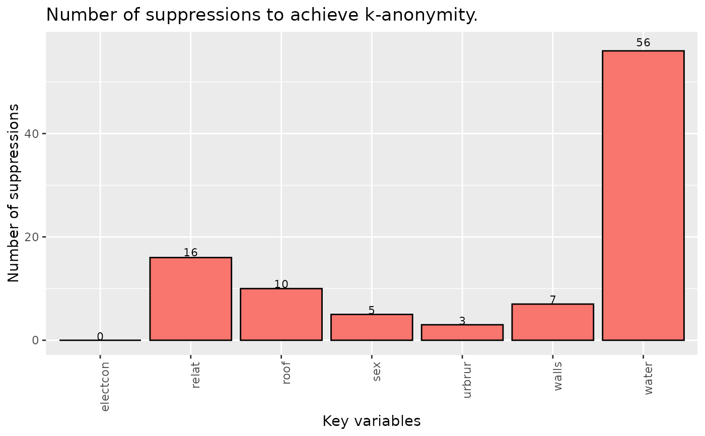
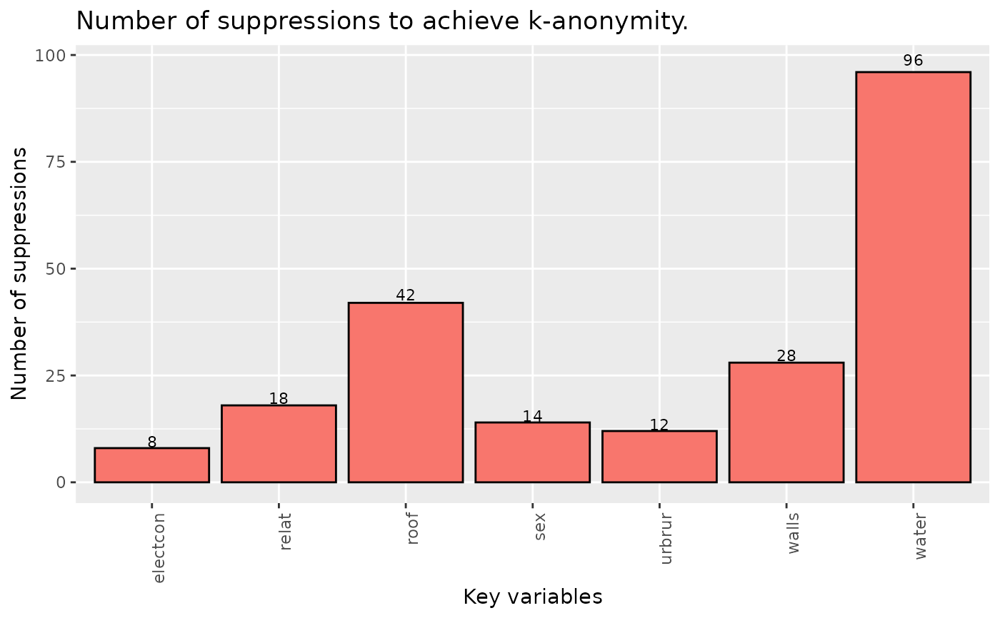

Algorithm to achieve k-anonymity by performing local suppression.
localSuppression(obj, k = 2, importance = NULL, combs = NULL, ...)
kAnon(obj, k = 2, importance = NULL, combs = NULL, ...)a sdcMicroObj-class-object or a data.frame
threshold for k-anonymity
numeric vector of numbers between 1 and n (n=length of vector keyVars). This vector represents the "importance" of variables that should be used for local suppression in order to obtain k-anonymity. key-variables with importance=1 will - if possible - not suppressed, key-variables with importance=n will be used whenever possible.
numeric vector. if specified, the algorithm will provide k-anonymity for each combination of n key variables (with n being the value of the ith element of this parameter. For example, if combs=c(4,3), the algorithm will provide k-anonymity to all combinations of 4 key variables and then k-anonymity to all combinations of 3 key variables. It is possible to apply different k to these subsets by specifying k as a vector. If k has only one element, the same value of k will be used for all subgroups.
see arguments below
names (or indices) of categorical key variables (for data-frame method)
name (or index) of variable which is used for stratification purposes, used in the data.frame method. This means that k-anonymity is provided within each category of the specified variable.
numeric value between 0 and 1 specifying how much keys that
contain missing values (`NAs`) should contribute to the calculation
of `fk` and `Fk`. For the default value of `1`, nothing changes with
respect to the implementation in prior versions. Each *wildcard-match* would
be counted while for `alpha=0` keys with missing values would be basically ignored.
Used in the `data.frame` method only because in the method for sdcMicroObj-class-objects,
this value is extracted from slot `options`.
max. number of cores used when computations are performed by strata. This parameter defaults to `1` (no parallelisation) and is ignored on windows-platforms.
Manipulated data set with suppressions that has k-anonymity with
respect to specified key-variables or the manipulated data stored in the
sdcMicroObj-class.
The algorithm provides a k-anonymized data set by suppressing values in key variables. The algorithm tries to find an optimal solution to suppress as few values as possible and considers the specified importance vector. If not specified, the importance vector is constructed in a way such that key variables with a high number of characteristics are considered less important than key variables with a low number of characteristics.
The implementation provides k-anonymity per strata, if slot 'strataVar' has
been set in sdcMicroObj-class or if parameter 'strataVar' is
used when appying the data.frame method. For details, have a look
at the examples provided.
Deprecated methods 'localSupp2' and 'localSupp2Wrapper' are no longer available
in sdcMicro > 4.5.0.
kAnon is a more intutitive term for localSuppression because the aim is always
to obtain k-anonymity for some parts of the data.
Templ, M. Statistical Disclosure Control for Microdata: Methods and Applications in R. Springer International Publishing, 287 pages, 2017. ISBN 978-3-319-50272-4. doi:10.1007/978-3-319-50272-4
Templ, M. and Kowarik, A. and Meindl, B. Statistical Disclosure Control for Micro-Data Using the R Package sdcMicro. Journal of Statistical Software, 67 (4), 1–36, 2015. doi:10.18637/jss.v067.i04
# \donttest{
data(francdat)
## Local Suppression
localS <- localSuppression(francdat, keyVar=c(4,5,6))
localS
#>
#> -----------------------
#> Total number of suppressions in the key variables: 4 (new: 4)
#>
#> Number of suppressions by key variables:
#> (in parenthesis, the total number suppressions is shown)
#>
#> Key2 Key3 Key4
#> 1 1 (1) 0 (0) 3 (3)
#>
#> 2-anonymity == TRUE
#> -----------------------
plot(localS)
## for objects of class sdcMicro, no stratification
data(testdata2)
kv <- c("urbrur", "roof", "walls", "water", "electcon", "relat", "sex")
sdc <- createSdcObj(testdata2, keyVars = kv, w = "sampling_weight")
sdc <- localSuppression(sdc)
## for objects of class sdcMicro, with stratification
testdata2$ageG <- cut(testdata2$age, 5, labels=paste0("AG",1:5))
sdc <- createSdcObj(
dat = testdata2,
keyVars = kv,
w = "sampling_weight",
strataVar = "ageG"
)
sdc <- localSuppression(sdc, nc = 1)
## it is also possible to provide k-anonymity for subsets of key-variables
## with different parameter k!
## in this case we want to provide 10-anonymity for all combinations
## of 5 key variables, 20-anonymity for all combinations with 4 key variables
## and 30-anonymity for all combinations of 3 key variables.
sdc <- createSdcObj(testdata2, keyVars = kv, w = "sampling_weight")
combs <- 5:3
k <- c(10, 20, 30)
sdc <- localSuppression(sdc, k = k, combs = combs)
## data.frame method (no stratification)
inp <- testdata2[,c(kv, "ageG")]
ls <- localSuppression(inp, keyVars = 1:7)
print(ls)
#>
#> -----------------------
#> Total number of suppressions in the key variables: 97 (new: 97)
#>
#> Number of suppressions by key variables:
#> (in parenthesis, the total number suppressions is shown)
#>
#> urbrur roof walls water electcon relat sex
#> 1 3 (3) 10 (10) 7 (7) 56 (56) 0 (0) 16 (16) 5 (5)
#>
#> 2-anonymity == TRUE
#> -----------------------
plot(ls)

## data.frame method (with stratification)
ls <- kAnon(inp, keyVars = 1:7, strataVars = 8)
print(ls)
#>
#> -----------------------
#> Total number of suppressions in the key variables: 109 (new: 109)
#>
#> Number of suppressions by key variables and strata:
#> (in parenthesis, the total number suppressions is shown)
#>
#> urbrur roof walls water electcon relat sex
#> AG5 1 (1) 2 (2) 1 (1) 1 (1) 1 (1) 1 (1) 1 (1)
#> AG3 2 (2) 3 (3) 3 (3) 7 (7) 0 (0) 2 (2) 0 (0)
#> AG1 0 (0) 10 (10) 5 (5) 24 (24) 0 (0) 3 (3) 5 (5)
#> AG2 2 (2) 5 (5) 3 (3) 13 (13) 2 (2) 2 (2) 1 (1)
#> AG4 1 (1) 1 (1) 2 (2) 3 (3) 1 (1) 1 (1) 0 (0)
#> Total 6 (6) 21 (21) 14 (14) 48 (48) 4 (4) 9 (9) 7 (7)
#>
#> 2-anonymity == TRUE in all strata!
#> -----------------------
plot(ls)

# }